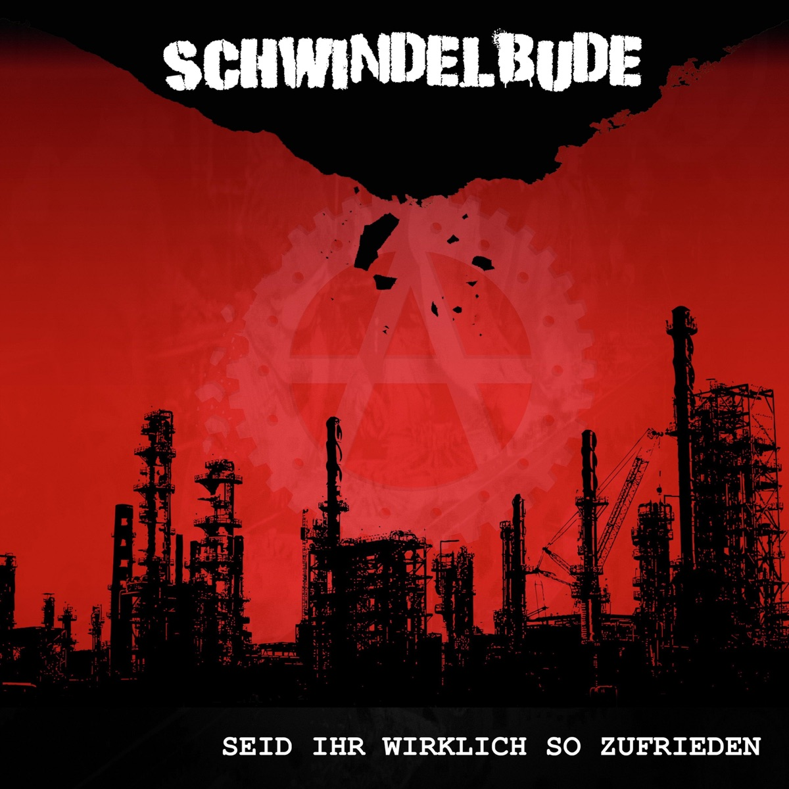

Review
SCHWINDELBude - Seid Ihr Wirklich so Zufrieden

Schwindelbude standen bereits mit 100 Kilo Herz und Ausschreitung auf der Bühne.
Das ist natürlich kein automatisches Qualitätssiegel. Aber es ist zumindest ein ziemlich guter Grund, mal genauer hinzuhören.
Mit Seid Ihr Wirklich so Zufrieden haben Schwindelbude ihr erstes und bisher einziges Album veröffentlicht. Ziemlich schnell ist klar, was man hier bekommt: einfachen, direkten Punkrock ohne unnötiges Beiwerk.
Wenn ich bei Schwindelbude von klassischem Punkrock spreche, meine ich genau das. Keine Geigen, keine Bläser und keinen Versuch, aus jedem Song noch irgendeinen besonderen Dreh herauszupressen. Stattdessen gibt es Gitarren, Schlagzeug, eine angenehm raue Stimme und schönes simples Geknüppel.
Gerade diese Schlichtheit ist für mich der Reiz an der Band.
Schwindelbude versuchen nicht, Punkrock neu zu erfinden. Muss auch niemand. Sie erinnern mich angenehm an die 90er, ohne dass das Ganze wie ein reines Nostalgieprogramm wirkt. Die Songs sind simpel aufgebaut und machen nicht mehr, als nötig ist.
Das klingt vielleicht wie ein versteckter Vorwurf.
Ist es aber nicht.
Viele Bands wären besser dran, wenn sie rechtzeitig merken würden, wann ein Song genug hat. Schwindelbude scheinen damit kein großes Problem zu haben.
Besonders erwischt hat mich allerdings "Athletic Antifa".
Der Song ist nicht auf dem Album enthalten, sondern später erschienen. Trotzdem muss ich ihn erwähnen, weil der deutliche Hardcore-Einschlag der Band verdammt gut steht. Und den Refrain kann man wunderbar auf einer Anti-Nazi-Demo brüllen.
Das ist dann schon sehr nah an meinem Geschmack.
Seid Ihr Wirklich so Zufrieden macht sich nicht wichtiger, als es ist. Es ist direkter, schlichter Punkrock, der genau deshalb funktioniert.
Herrliche Scheiße.
Schwindelbude auf Spotify
Schwindelbude auf YouTube
Schwindelbude auf Instagram